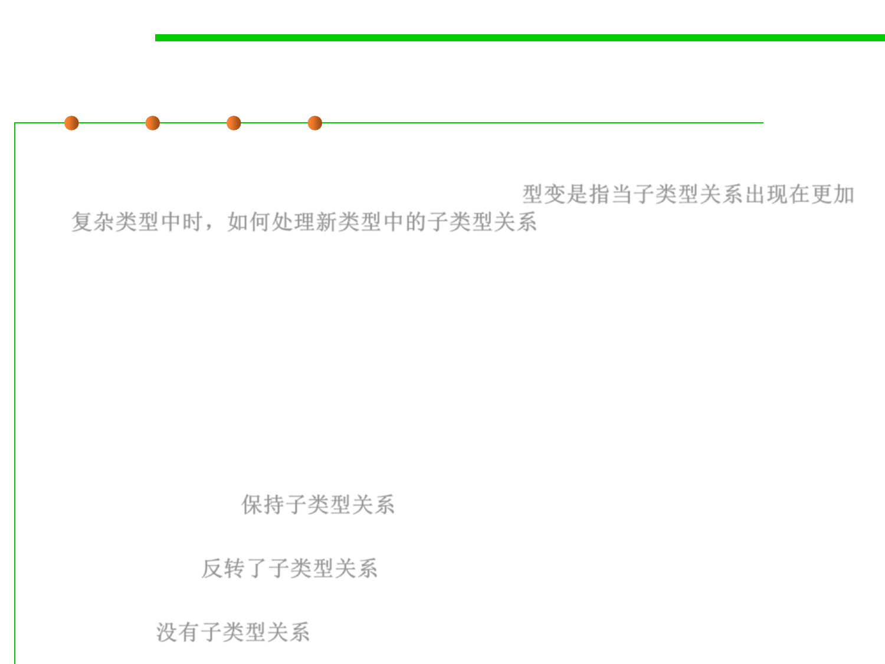

Variance
5.2 Construction for Reuse
▪ Variance refers to how subtyping between more complex types relates
to subtyping between their components. 型变是指当子类型关系出现在更加
复杂类型中时，如何处理新类型中的子类型关系
– E.g., Cat extends Animal, the type Cat is a subtype of Animal.
– How should List<Cat> relate to List<Animal>?
– Or how should a function returning Cat relate to a function
returning Animal?
▪ Three types of variance
– Covariant(协变): Subtyping is preserved. If List<Cat> is a subtype of
List<Animal>. 保持子类型关系
– Contravariant(逆变): Subtyping is reversed. If List<Animal> is a subtype of
List<Cat>. 反转了子类型关系
– Invariant(不变): Neither List<Cat> nor List<Animal> is a subtype of the
other. 没有子类型关系